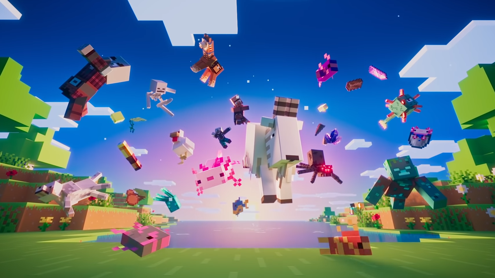
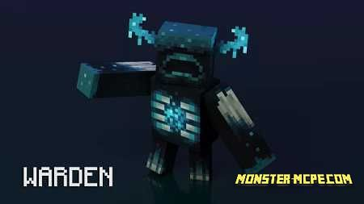
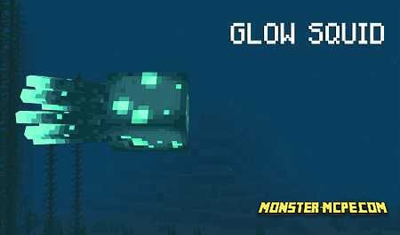
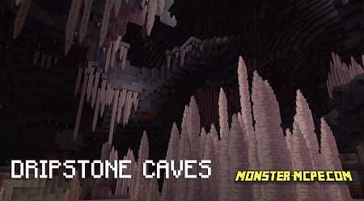
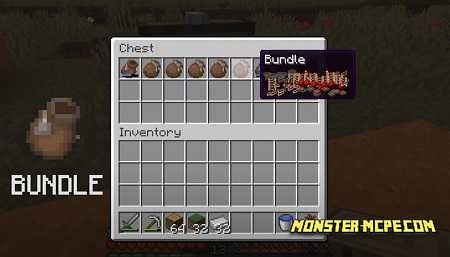
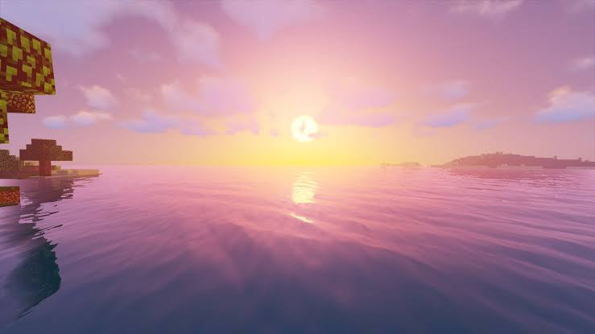
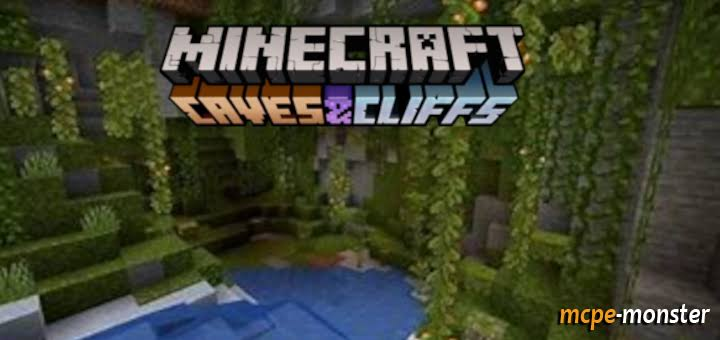

#the minecraft caves & cliffs #
We present to your attention the
announcement of the upcoming update for
Minecraft Bedrock 1.17.0 for Android! Most
recently, developer Mojang held a very
significant event called Minecraft Live
2020, which presented new innovations that
will be added to the Minecraft world in the
Minecraft PE 1.17 update.
At Minecraft Live 2020, the developers
announced the Caves & Cliffs update. In
the upcoming update, you will find a large
number of new features that we will tell
you about today.
And we want to note that this update should
be presented both for the Java version and
for the Mobile version of the Minecraft
game.
Please note that the release of Minecraft
PE 1.17 will be presented to the Minecraft
community next year, namely in the summer
of 2021. Our team hopes that this winter we
will see the first beta versions of this
update.
Let's take a look at all that will be added
to the Minecraft world in the upcoming
Minecraft update 1.17.

Telescope
Allows you to see at a great distance.
Crafted from crystals and copper.

New mob: Warden
This mob looks like a minotaur. Reacts to
sounds and senses your fear. The faster you
run, the faster it catches up. To survive,
you need to sneak.

New mob: Glow squid.
Minecraft Live 2020 event voting
winner.
During Minecraft Live, players voted for a
new mob: the Glow squid won. These
creatures will be found in the depths of
the sea and in underground caves. Another
source of light in the Minecraft world.

dripstone caves
The next location is the Dripstone Cave. A
place where you will see a lot of
Stalagmite and Stalactite.
Stalagmite is mineral formations that grow
from the ground. Stalactite is mineral
formations that grow on the ceiling of a
cave.
These formations are quite dangerous, as
they can cause instant damage regardless of
whether the player fell on them or they
fell on him. Please note that water drips
from the stalactites, which can be used to
fill the cauldrons if they are placed under
the stalactite.

lush caces
The first thing we'll look at is Lush
caves.
A very large and deep cave will be added to
the world of Minecraft, overgrown with
various plants, and flooded with water in
places. The developers have changed the
generation of caves. Added new types of
plants:
New resource: Copper
New ore will be generated underground.
Used to craft Telescope and Lightning
Rod.
Using this resource, players can create
copper blocks.
Copper blocks change color over time due to
oxidation, namely, turn green.

Amethyst
Amethyst Geode is a rare block that
generates new structures underground. This
block cannot be broken. Amethyst Geode
blocks grow Amethyst Crystal. Shards of
crystals drop from them. Used to craft a
telescope.

Archeology
Use a brush to remove ceramic shards. The
shards can be placed on pots and burned.
The fragments may depict:

Bundles
The developers have solved the problem of
lack of space in the inventory and added
new bags.

Updated generation
The developers of the Mojang studio have
changed the generation of the world.
What will be changed?: Underground waters
will be added to the Minecraft world,
mountains have become steeper and higher,
ore underground will be generated in
groups, Powdered Snow will be added through
which the player will fall through, and new
structures have been added.
Sculk chute
Sculk Growth is a thin growth, like a layer
of snow.
The Sculk Sensor is a sensor that responds
to steps, block placement, and shots. Wool
can drown out the sound, then the sensor
will not respond. When triggered, activates
the Redstone signal.Sculk block

New mob: Axolotl
This is a new type of fish found underwater
in Lush Cave.
Players can catch them using a bucket and
tame them.
Tamed Axolotl mobs protect players.
In the Minecraft world, they spawn in
different colors.
During the battle, they can pretend to be
dead to restore health.
Lightning rod
During a thunderstorm, attracts lightning
strikes and protects the house. Crafted
from copper.

New mob: Goat
New mobs have been added to the mountain
biome, namely Goats.
They jump high, overcoming obstacles.
Butt and push other animals and creatures
far away.



